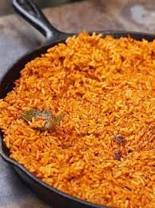
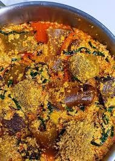
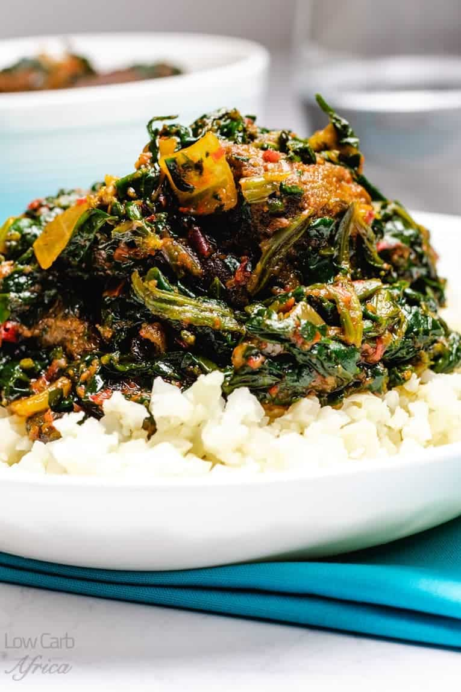

My name is Greatness Oluwatobiloba Paul, this is my webpage showcasing my best Nigerian foods with their recipe, and i may probably add steps by steps of how to cook them.
  
The popular jollof rice is a classic recipe that makes it to almost all special occasions in Nigeria. It is a rich, tasty, and elegant meal consisting of rice cooked with pepper, broth, seasoning, and spices in one pot. Serve this amazing meal with any protein of your choice.